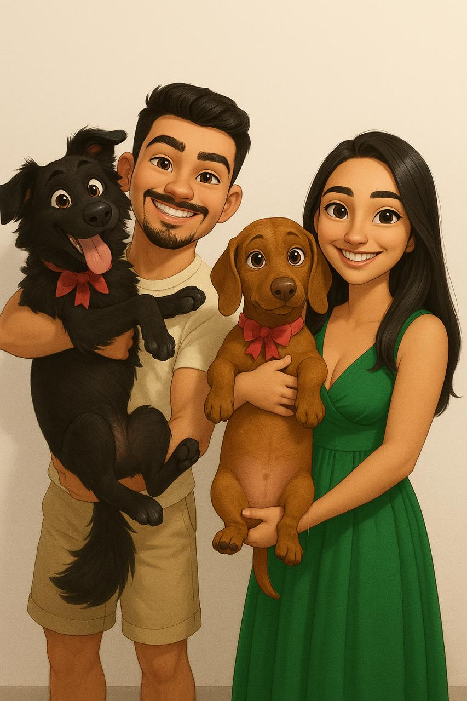

Sobre mim

Olá, tudo bem?
Espero que sim!
Muito prazer, meu nome é Felipe. Sou natural de São Paulo (capital), nascido em 1997 (atualmente com 28 anos) e tenho dois irmãos.
Sou casado com a Beatriz e, atualmente, moramos em São Carlos, no interior de São Paulo.
Temos dois cachorros: o Nick e o Romeo, um é uma mistura de SRD com Border Collie e o outro é um Dachshund mini.
Gosto bastante de praticar esportes; faço natação e também aprecio corrida, embora esteja há algum tempo sem praticá-la.
Além disso, adoro ler livros sobre os mais diversos temas. Tenho também um grande interesse por desenho, gosto muito de desenhar e, inclusive, tenho vontade de fazer um curso de desenho e pintura.